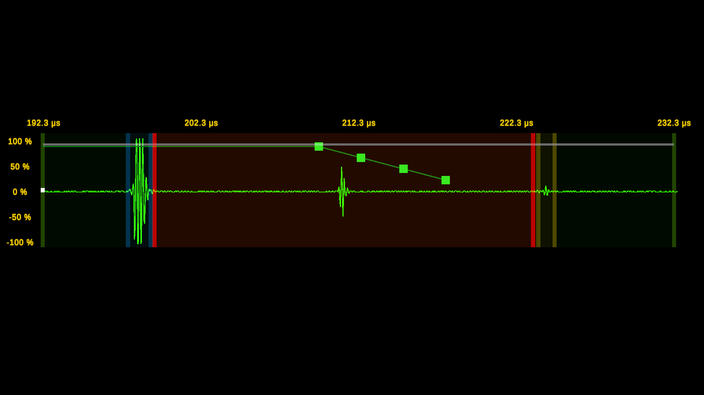
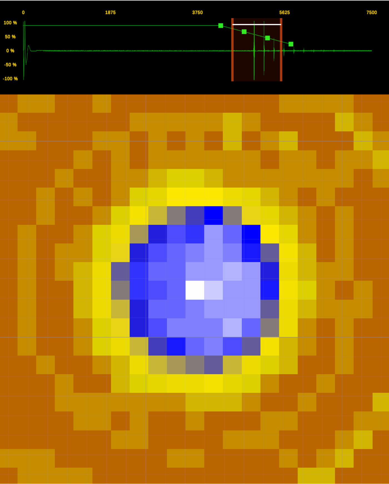

Core Simulation Development
Developed the Unity systems responsible for simulated equipment behaviour, probe movement and inspection workflows.

A high-fidelity ultrasonic immersion testing simulation designed to recreate realistic inspection workflows, equipment interaction and ultrasonic scan visualization in a virtual training environment.
UTI Simulation recreates the workflow of ultrasonic immersion testing, allowing users to interact with simulated equipment, perform inspection procedures and understand ultrasonic test data in a controlled virtual environment.
The project was designed as a practical training simulation where complex inspection procedures could be practiced without depending on physical testing equipment or consumable materials.
Developed the Unity systems responsible for simulated equipment behaviour, probe movement and inspection workflows.
Implemented constrained probe movement, collision handling and fault scenarios to support realistic and corrective training.
Created an interactive interface for controlling inspection parameters, scan operations and simulation feedback.
Processed ultrasonic inspection data and generated A-scan, B-scan and related visualization output within the simulation.

UTI Simulation combines equipment interaction, constrained mechanical behaviour, procedural training logic and ultrasonic inspection visualization to provide a scalable alternative to physical hands-on training.